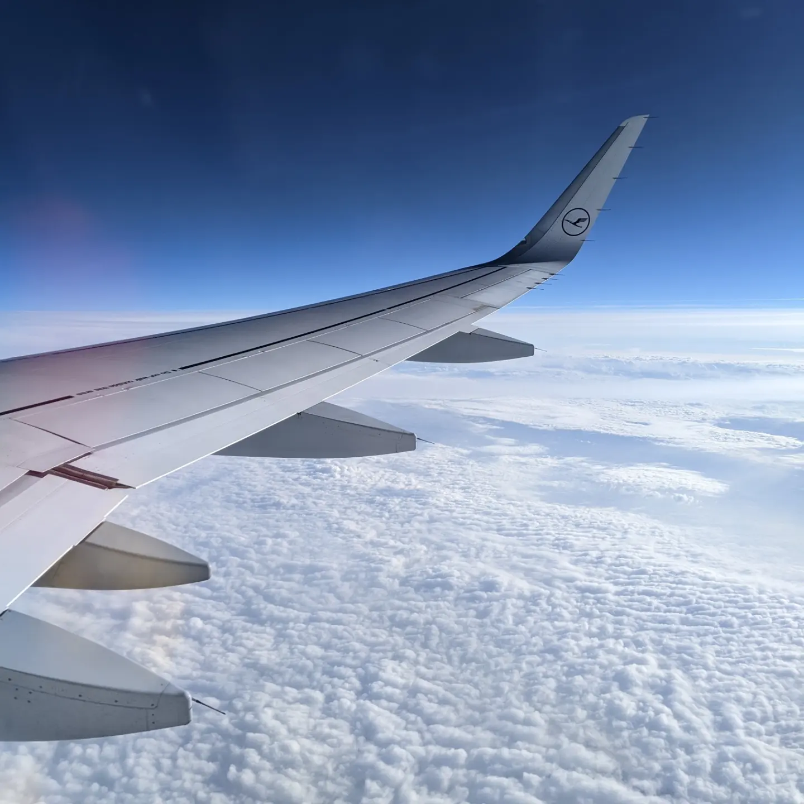
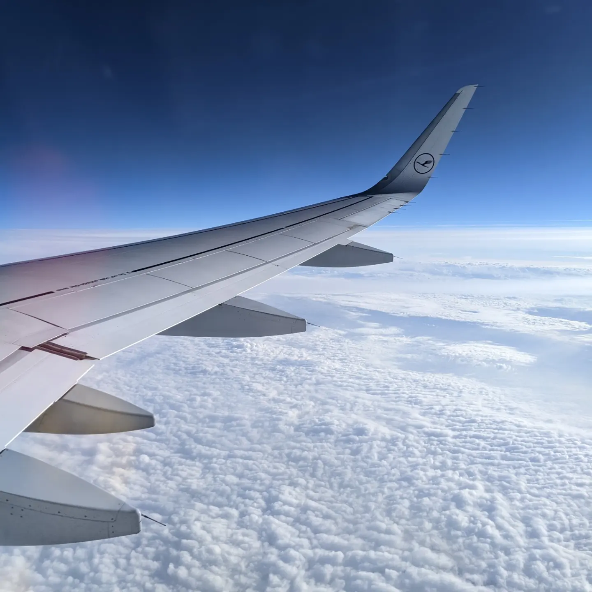

Die ersten Tage
Sonntag Abend, 28.August.
Ich bin jetzt schon seit Freitag Nachmittag schon hier. Aber erst mal von vorne:
Freitag um 3 Uhr ging es los. Mein Onkel hat mich abgeholt und mich um Flughafen gebracht.


 

Nach einem sehr entspannten Flug bin ich dann endlich in Dublin gelandet. Ja, es hat geregnet, aber hey, was erwartet man auch anderes von Irland?


Mit den anderen Auslandsschülern meiner Organisation ging es dann in den Süden.
Unterdessen war es dann auch wärmer und man konnte auch Sonnenschein sehen.
Eine Fahrt durch grüne Felder und Kühe (wir haben mehr Kühe gesehen als Schaafe)


Und dann endlich der Moment, auf den wir gewartet haben. Endlich habe ich meine Gastmutter getroffen
Hier paar Fotos von meinen Hunden hier
Hehe, viele Fotos :D


Den ersten richtigen Tag habe ich mit Emilia verbracht. So, jetzt gibt es hier eine Einleitung wie wir "Verwandt" sind:
Sie kommt ebenfalls aus Deutschland und ihre Gastmutter ist die Tante von meiner Gastmutter...Neeeeein, garnicht kompliziert
Jedenfalls haben wir den Tag verbracht und uns die Stadt angesehen. Und was soll ich sagen...sie ist megaa